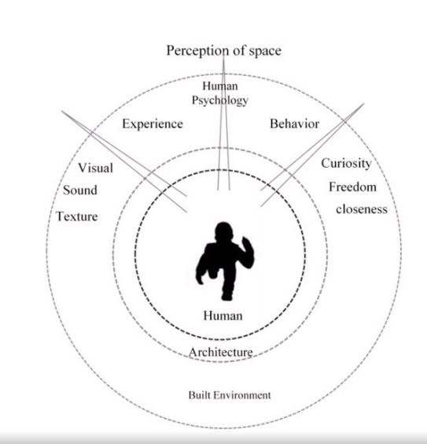
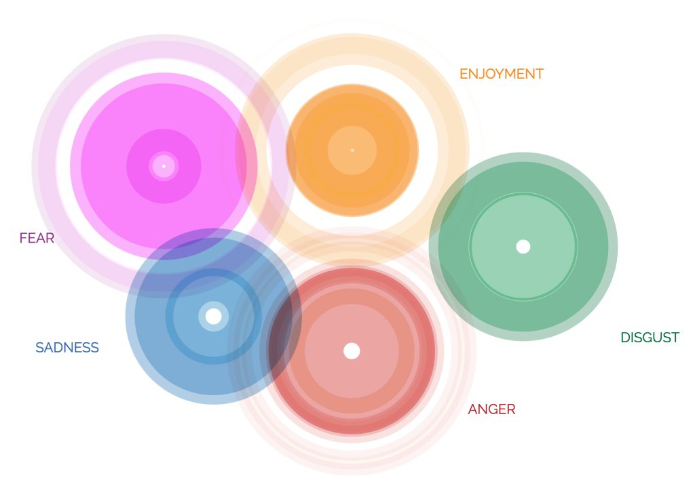
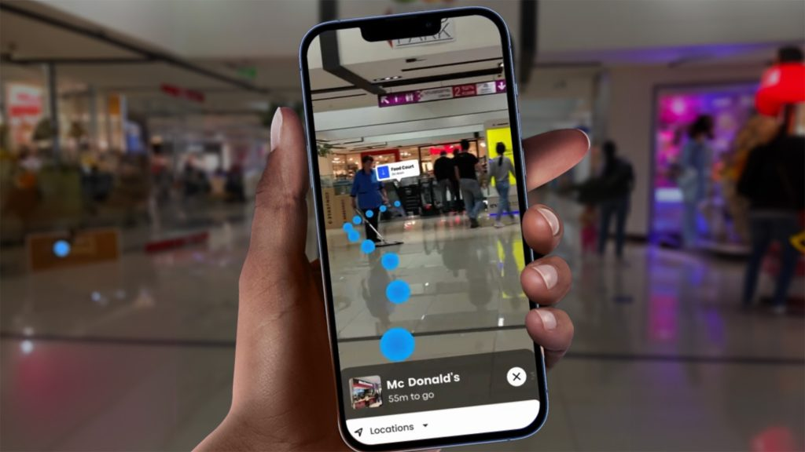

The readings this week, which combined “visual perception”, “bodily movement” and “spatial narrative”, have given me new insights into how to design a more emotional, immersive and culturally profound experience through technology.

BulbAPP (n.d.) The Psychology of Space: Understanding Spatial Perception and Its Implications for Architecture. Available at: BulbAPP (Accessed: 12 May 2025)
In Chapter 5 of Doing Visual Ethnography, Sarah Pink proposes a method called “walking video” rather than simply filming spaces, it follows people’s movement trajectories to understand their relationship with the environment. She emphasizes that vision is not static but dynamically shifts with bodily movement. This has inspired me to consider designing a “walking narrative” for my AR project, instead of dictating where users should look, stories are triggered by their physical paths. For instance, as users walk through the nave of Winchester Cathedral toward the choir, they could gradually “unlock” soundscapes from different eras. This “walking-based” interactive logic better aligns with how humans naturally perceive space.

Stamen Design. (2020) Atlas of Emotions [Online image]. Available at: https://stamen.com/work/atlas-of-emotions/ (Accessed: 12 May 2025)
Giuliana Bruno’s Atlas of feeling helped me discover the complex connection between “space” and “emotion.” She characterizes viewing as a type of “emotional mapping,” emphasizing that when we look, we are actually experiencing a location. This reminds me that technological reproduction should attempt to evoke a space’s sensory recall as well as exact reconstruction. For example, as users visit the main altar area, they may hear resonating prayers and observe dark figures. This type of sensory environment, which combines sound and visuals, is essentially a story of emotion about space.

Scene3D (2024) AR Matterport [Online image]. Available at: Scene3D website (Accessed: 12 May 2025)
I also revisited Bolter and Grusin’s theory of “Immediacy” and “Hypermediacy”. In my AR project, these two states often alternate, when users enter a space overlaid with imagery, there’s an “immediate” immersive feeling, but when interactive buttons or information tags pop up on the screen, it returns to a state where “the medium is seen”. I realize that a good immersive experience doesn’t completely hide the medium, but designs the rhythm of this “mediated feeling”, allowing the audience to gain more dimensional perceptions between engagement and detachment.
Overall, this week’s readings have deepened my understanding that technology isn’t about “perfectly reproducing space,” but creating paths for people to “experience space.” Whether it’s the rhythm of walking, the direction of gaze, the acoustic sense of distance, or the presence of the medium itself. These are all “narrative languages” I can mobilize in design. In the future, I hope to not only construct physical spaces in my AR projects but also build “emotional topographies.”
Reading list
- Sarah Pink – Doing Visual Ethnography (2013), Chapter 5: Walking with Video
- Giuliana Bruno – Atlas of Emotion (2002), Introduction
- Bolter & Grusin – Remediation: Revisiting Immediacy and Hypermediacy